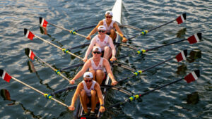
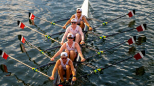

What is Crew?
Crew is a competitive rowing sport that blends strength, rhythm, and teamwork. Athletes row in long, narrow boats using oars, working to row in perfect sync to move the boat efficiently across the water. Each position in the boat has a specific role, and the sport demands focus, coordination, and consistent technique. Crew is the perfect mix of endurance, precision, and the unique experience of gliding over the water.
Why Crew?
Crew has become one of my favorite interests because it challenges both my body and my mind. I enjoy the rhythm of rowing, the precision of each stroke, and the teamwork required to move the boat efficiently. When the boat is one, it's an addicting feeling, it feels effortless. Being on the water brings me a sense of focus and calm, while the physical effort pushes me to improve my strength, endurance, and technique.
You can learn more about my team here Utah Crew.